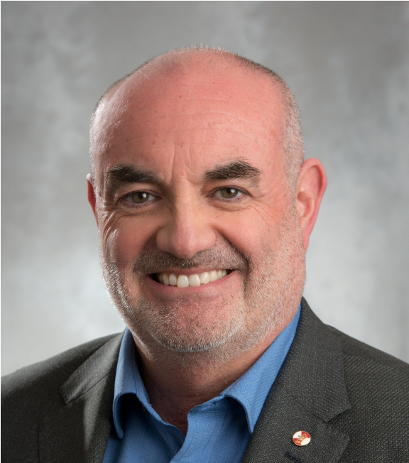

Claudio Canizares
University of Waterloo, Canada
Presentation: Microgrid Overview
Dr. Claudio Cañizares is a University Professor, Hydro One Chair, and Executive Director of WISE at Waterloo, where he has been since 1993. His work on modeling, simulation, computation, stability, control, and optimization of power and energy systems is highly cited and recognized. He is the past IEEE Trans. Smart Gird EIC and an IEEE and PES Boards’ Director, and is a Fellow of the IEEE, Royal Society of Canada, Canadian Academy of Engineering, and Chinese Society for Electrical Engineering. He has received the IEEE PES 2025 Ramakumar Family Renewable Energy Excellence and 2017 Outstanding Educator Awards, the 2016 IEEE Canada Electric Power Medal, and various other awards, recognitions, and leadership appointments from IEEE, PES, Waterloo, and Chinese universities.